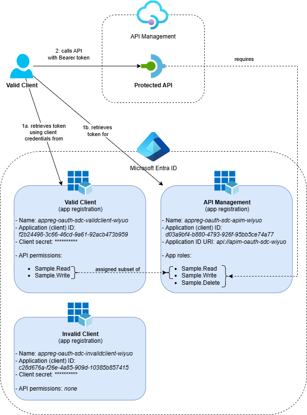
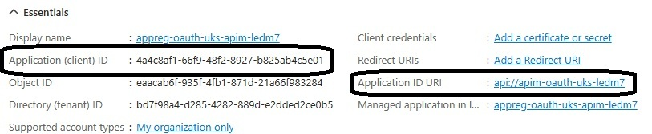
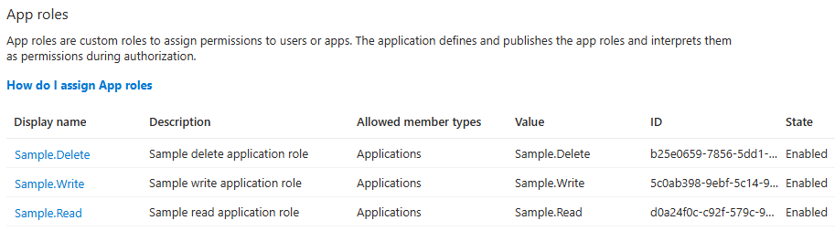
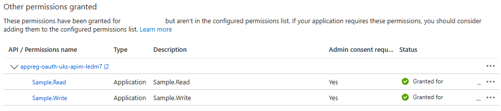
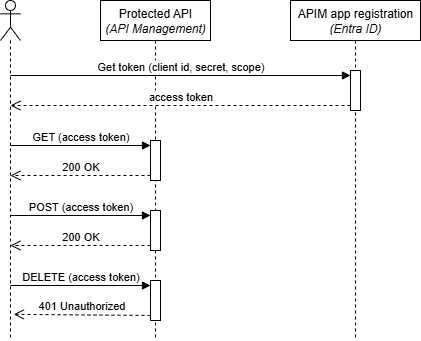

Protect APIs in Azure API Management with OAuth

I’ve been working on securing APIs in Azure API Management and wanted to show you how to deploy a complete OAuth-protected setup using Bicep. While Microsoft’s documentation covers how to protect an API in Azure API Management using OAuth 2.0, it focuses on manual configuration through the Azure portal.
In this post, I’ll show you how to deploy everything using Bicep, including the necessary Microsoft Entra ID app registrations. This approach gives you a fully automated, repeatable infrastructure-as-code solution for protecting your APIs with OAuth.
This is the first post in a series about OAuth and API Management where we’ll explore different scenarios and implementation patterns. The series covers both protecting APIs with OAuth and calling OAuth-protected resources from various Azure services:
- Protect APIs in Azure API Management with OAuth - this post
- Calling OAuth-Protected APIs with Managed Identity
- Calling OAuth-Protected Backends from API Management - coming later
- Part 1: Using Credential Manager
- Part 2: Using Send-Request Policy with Client Secret
- Part 3: Using Send-Request Policy with Client Certificate
Table of Contents
- Why Protect APIs with OAuth
- Solution Overview
- Entra ID Configuration
- API Management Policy Configuration
- Testing the Protected API
- Considerations
- Conclusion
Why Protect APIs with OAuth
API Management provides several security mechanisms, but OAuth 2.0 with Microsoft Entra ID offers robust protection for enterprise scenarios. Here’s what you get:
- Token-based authentication: Clients authenticate with Entra ID and receive access tokens
- Role-based authorization: Fine-grained control over API operations based on application roles
- Centralized identity management: Integration with your organization’s identity provider
- Token validation: API Management validates tokens without calling back to Entra ID for each request
- Managed identity integration: Azure resources that support managed identities can easily access APIs protected by OAuth 2.0 with Entra ID
The traditional approach requires manual configuration of app registrations in Entra ID, which can be error-prone and difficult to reproduce across environments. Using Bicep with the Microsoft Graph extension solves this by treating identity configuration as infrastructure-as-code.
It’s worth noting that while this post focuses on API Management, the same Entra ID configuration can be used to protect other types of APIs, such as Azure Functions, ASP.NET Core Web APIs, or any other application that supports OAuth 2.0 authentication with Entra ID.
Solution Overview
The solution deploys the following architecture:

The complete solution includes:
- An API Management service with an OAuth-protected API
- Three Entra ID app registrations:
- One app registration representing the APIs in API Management
- One client with ‘read’ and ‘write’ permissions
- One client with no API access (for testing authorization failures)
- Application Insights and Log Analytics Workspace for monitoring and logging purposes
To make deployment easier, I’ve created an Azure Developer CLI (azd) template: Protect API Management with OAuth. If you want to use it, check out the getting started section for the prerequisites and deployment instructions.
Entra ID Configuration
The key to deploying Entra ID resources with Bicep is the Microsoft Graph Bicep Extension, which has recently been released as GA. This extension allows you to manage Microsoft Graph resources like app registrations directly from Bicep templates.
To enable the extension, you need to add it to your bicepconfig.json file:
{
"extensions": {
"microsoftGraphV1": "br:mcr.microsoft.com/bicep/extensions/microsoftgraph/v1.0:1.0.0"
}
}
This configuration tells Bicep to load the Microsoft Graph extension, making the Microsoft.Graph resource types available in your templates.
The solution creates three app registrations with specific purposes.
API Management App Registration
The Microsoft.Graph/applications resource creates an app registration in Entra ID that represents the API Management service and is configured with application roles. The corresponding Microsoft.Graph/servicePrincipals resource can be found under ‘Enterprise Applications’ in Entra ID:
extension microsoftGraphV1
resource apimAppRegistration 'Microsoft.Graph/applications@v1.0' = {
uniqueName: name
displayName: name
identifierUris: [ identifierUri ]
api: {
requestedAccessTokenVersion: 2 // Issue OAuth v2.0 access tokens
}
appRoles: [
{
id: guid(tenantId, name, 'Sample.Read')
description: 'Sample read application role'
displayName: 'Sample.Read'
value: 'Sample.Read'
allowedMemberTypes: [ 'Application' ]
isEnabled: true
}
{
id: guid(tenantId, name, 'Sample.Write')
description: 'Sample write application role'
displayName: 'Sample.Write'
value: 'Sample.Write'
allowedMemberTypes: [ 'Application' ]
isEnabled: true
}
{
id: guid(tenantId, name, 'Sample.Delete')
description: 'Sample delete application role'
displayName: 'Sample.Delete'
value: 'Sample.Delete'
allowedMemberTypes: [ 'Application' ]
isEnabled: true
}
]
// Add a 'HideApp' tag to hide the app from the end-users in the My Apps portal
tags: ['HideApp']
}
resource apimServicePrincipal 'Microsoft.Graph/servicePrincipals@v1.0' = {
appId: apimAppRegistration.appId
appRoleAssignmentRequired: true // When true, clients must have an app role assigned in order to retrieve an access token
}
Key configuration points:
- The
identifierUrisproperty sets the Application ID URI, such asapi://apim-oauth-uks-ledm7. When requesting an access token from Entra ID, you need to use this URI with the/.defaultsuffix as the scope (for example,api://apim-oauth-uks-ledm7/.default) - The
requestedAccessTokenVersionis set to2for OAuth 2.0 tokens - Three application roles are defined:
Sample.Read,Sample.WriteandSample.Deletefor different API operations - The
guid(tenantId, name, 'Sample.Read')function generates a unique deterministic ID, ensuring the app role ID remains consistent across deployments - The
HideApptag prevents the app from appearing in the My Apps portal for end-users - The
appRoleAssignmentRequiredproperty ensures only clients with assigned roles can get tokens
After deployment, you can see the created app registration in the Azure portal with the client ID and identifier URI:

In this image, you can see two important values highlighted:
- Application (client) ID: This is the value of the audience claim in the JWT token and can be used to verify that the token was issued for this specific app registration
- Application ID URI: This is the scope to use when retrieving an access token from Entra ID
The available roles are also visible in the app registration under the “App roles” section:

For the complete implementation of the API Management app registration, see the apim-app-registration.bicep template in the project repository. The Bicep file uses a variable to define the roles and a for loop to create them, which makes it easier to manage the roles and keeps the code readable.
Naming tip: Don’t use the exact name of your API Management service for the app registration. When you enable the system-assigned managed identity on a resource like API Management, a service principal with the same name is created. Using the same name for the app registration would result in two service principals with the same name, which can cause issues when you’re trying to assign permissions.
Client App Registrations
You can create an app registration for a client application using Bicep. The following example demonstrates how to define such a client app registration:
resource clientAppRegistration 'Microsoft.Graph/applications@v1.0' = {
uniqueName: name
displayName: name
// Add a 'HideApp' tag to hide the app from the end-users in the My Apps portal
tags: ['HideApp']
}
resource clientServicePrincipal 'Microsoft.Graph/servicePrincipals@v1.0' = {
appId: clientAppRegistration.appId
// Enforces that users/clients must be assigned an app role to access the application.
// This is not strictly required for this scenario, but it adds an extra layer of security.
appRoleAssignmentRequired: true
}
For the complete client app registration implementation, I’ve created a reusable Bicep module client-app-registration.bicep that can be used to create both the valid client (with permissions) and the invalid client (without permissions) for testing different authorization scenarios.
Assigning roles can be done using the Microsoft.Graph/appRoleAssignedTo resource. Here’s how to assign the Sample.Read and Sample.Write roles to the a client:
func getAppRoleIdByValue(appRoles array, value string) string =>
first(filter(appRoles, (role) => role.value == value)).id
resource assignSampleReadToValidClient 'Microsoft.Graph/appRoleAssignedTo@v1.0' = {
resourceId: apimServicePrincipal.id
appRoleId: getAppRoleIdByValue(apimAppRegistration.appRoles, 'Sample.Read')
principalId: clientServicePrincipal.id
}
resource assignSampleWriteToValidClient 'Microsoft.Graph/appRoleAssignedTo@v1.0' = {
resourceId: apimServicePrincipal.id
appRoleId: getAppRoleIdByValue(apimAppRegistration.appRoles, 'Sample.Write')
principalId: clientServicePrincipal.id
}
The getAppRoleIdByValue function helps you retrieve the app role ID based on its value. Since role assignments require the unique role ID, this function lets you reference roles by name (such as ‘Sample.Read’), making your Bicep templates easier to read and reusable across different environments where the role IDs may vary.
Note that assigning roles immediately after creating the app registrations can fail because the service principals might not be provisioned yet. In the template, I’ve worked around this by assigning the roles after API Management is deployed because that takes some time. In the future, I’m hoping to use the waitUntil decorator instead.
For the complete role assignment implementation, see the assign-app-roles.bicep template in the project repository.
Once deployed, you can verify the role assignments in the Azure portal under the valid client app’s API permissions:

Important limitation: The Microsoft Graph Bicep extension doesn’t support generating client secrets or certificates. This means you’ll need to manually create these for your client applications after deployment—either through the Azure portal (in the “Certificates & secrets” section of each client app registration) or by using the Azure CLI.
API Management Policy Configuration
The API is protected using an API Management policy that validates OAuth tokens and enforces role-based access. Here’s a simplified example showing the core validation logic:
<policies>
<inbound>
<base />
<!-- Validate the JWT token -->
<validate-azure-ad-token tenant-id="{{tenant-id}}">
<audiences>
<audience>{{oauth-audience}}</audience>
</audiences>
<required-claims>
<claim name="roles" match="any">
<value>Sample.Read</value>
</claim>
</required-claims>
</validate-azure-ad-token>
</inbound>
</policies>
The validate-azure-ad-token policy uses two named values to verify token authenticity: tenant-id contains your Directory (tenant) ID to ensure the token was issued by the correct identity provider, and oauth-audience contains the ‘Application (client) ID’ of the API Management app registration to verify the token was retrieved for the expected resource. This combination ensures that only tokens issued by your tenant for the correct API Management app registration are accepted. The policy also checks that the token’s roles claim includes the required role, such as Sample.Read.
In production scenarios, I usually configure the validate-azure-ad-token policy at the global scope to enforce OAuth authentication for all APIs in the API Management instance, then configure the specific required roles at the API or operation scope by setting them in a variable before the token validation occurs. This approach provides consistent security across your APIs while making it easy to enforce different role requirements for different endpoints or operations, keeping your policy logic both centralized and flexible.
You can find the full policy example with role determination based on HTTP methods in the project repository.
As an alternative to the validate-azure-ad-token policy, you can use the validate-jwt policy, which supports other identity providers that implement OpenID Connect:
<validate-jwt header-name="Authorization">
<openid-config url="https://login.microsoftonline.com/{{tenant-id}}/v2.0/.well-known/openid-configuration" />
<audiences>
<audience>{{oauth-audience}}</audience>
</audiences>
<required-claims>
<claim name="roles" match="any">
<value>Sample.Read</value>
</claim>
</required-claims>
</validate-jwt>
Testing the Protected API
After deployment, you can test the OAuth-protected API using the OAuth 2.0 client credentials flow. The following sequence diagram shows the authentication and authorization flow:

For a detailed explanation on how to test the API with the VS Code REST Client extension, see the ‘Test the protected API’ section in the template’s demo guide. But you can use any tool that supports HTTP requests.
Here are the basic HTTP requests you’ll use:
- Get an access token from Entra ID:
# Get a token from Entra ID
# @name getToken
POST https://login.microsoftonline.com/{{tenantId}}/oauth2/v2.0/token
Content-Type: application/x-www-form-urlencoded
client_id={{clientId}}&client_secret={{clientSecret}}&grant_type=client_credentials&scope={{clientScope}}
- Call the protected API with different HTTP methods:
# Call GET on Protected API with token
GET https://{{apimHostname}}/protected
Authorization: Bearer {{getToken.response.body.access_token}}
# Call POST on Protected API with token
POST https://{{apimHostname}}/protected
Authorization: Bearer {{getToken.response.body.access_token}}
# Call DELETE on Protected API with token (should fail without Sample.Delete role)
DELETE https://{{apimHostname}}/protected
Authorization: Bearer {{getToken.response.body.access_token}}
The API will return a 200 OK response if the token is valid and the client has the required role, or a 401 Unauthorized response if authorization fails.
You can inspect the access token at jwt.ms to see the claims, including the roles claim that contains the assigned application roles.
Considerations
When implementing OAuth protection for API Management, there are several architectural decisions to consider that will impact your security model, performance and maintenance overhead.
App Registration Strategy
You’ll need to decide how many app registrations to create for your APIs.
Single app registration approach: Create one app registration that represents all APIs in your API Management instance, with different roles for each API or set of operations. This is the approach shown in this post. The main benefit is that clients only need to retrieve one token to access multiple APIs they’re authorized for, reducing the number of calls to Entra ID. However, if clients have many role assignments, the JWT token can become large, potentially impacting performance or causing issues with firewalls that limit header sizes.
Multiple app registrations approach: Create a separate app registration for each API in API Management. This results in smaller JWT tokens with fewer roles, but clients need to retrieve and cache separate tokens for each API since the OAuth 2.0 client credentials flow in Entra ID only supports one scope per token request. This also increases the number of app registrations you need to maintain.
Client Authentication Methods
The authentication method your clients use affects both security and implementation complexity.
Managed identities should always be your first choice when clients run on Azure resources within the same Entra ID tenant. This eliminates secret management entirely and provides the highest security with the least operational overhead.
Certificates are Microsoft’s recommended best practice over client secrets. The private key stays with the client and doesn’t travel over the network, making it more secure. However, certificate management can be more complex for clients to implement.
Client secrets are the simplest option from a client implementation perspective but less secure since the secret is transmitted with each token request. You’ll also need to plan for secret rotation since client secrets have expiration dates, and you need a secure way to distribute the secrets to your clients.
Federated credentials can be a good alternative for external clients that support this authentication method, though the setup can be more complex.
If you want to enforce that clients use certificates or managed identities instead of client secrets, you can add an additional check in your API Management policy that requires the azpacr claim in the token to be 2, indicating that certificate-based authentication was used.
Conclusion
Deploying OAuth-protected APIs in Azure API Management using Bicep provides several benefits:
- Infrastructure as code: You can reproduce your environment, including identity configuration, every time you deploy
- Role-based security: Fine-grained access control using application roles
- Enterprise integration: Native integration with Microsoft Entra ID
This approach eliminates manual configuration steps and provides a solid foundation for securing APIs in enterprise environments. In upcoming posts in this series, we’ll explore additional OAuth scenarios.
You can find the complete working example in my protect-apim-with-oauth repository, which includes detailed deployment instructions and testing examples.